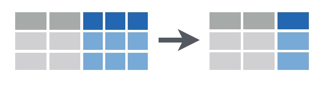

Crear nuevas variables a partir de las que ya están en tu conjunto de datos es una habilidad esencial para la manipulación de datos antes de realizar gráficos o análisis. Estas nuevas variables pueden ser una variable transformada que deseas analizar, una nueva variable que es una función de las existentes, o un nuevo conjunto de etiquetas para tus muestras.
Para demostrar algunas de las funciones comúnmente utilizadas en R para hacer esto, consideremos un conjunto de datos sobre la especificidad alimentaria de herbívoros marinos en cinco especies de macroalgas. Se recolectaron veinte individuos replicados de cada una de las siete especies de macroalgas en el puerto de Sydney, y se registró la abundancia de siete especies de crustáceos herbívoros en cada muestra replicada (datos de Poore et al. 2000)).
Descarga el conjunto de datos, Herbivore_specialisation.csv, y cárgalo en R.
Herbivores <- read.csv(file = "Herbivore_specialisation.csv", header = TRUE)Las dos primeras columnas son variables categóricas que etiquetan las muestras como provenientes de cada uno de los cinco hábitats o como recolectadas durante el día o la noche. La tercera columna es el número de réplica por combinación de hábitat y día/noche. La cuarta columna es la biomasa del hábitat muestreado y el resto de las columnas son las cuentas de cada especie de herbívoro en cada muestra.

Agregar una nueva variable a un marco de datos existente se puede hacer asignando el resultado de una función determinada a un nuevo nombre de variable de la siguiente manera.
Herbivores$log_Mass <- log(Herbivores$Mass)
Herbivores$Ampithoe <- Herbivores$Ampithoe_caddi + Herbivores$Ampithoe_kava + Herbivores$Ampithoe_nganaLa primera línea crea una nueva variable llamada log_Mass, que es el logaritmo de la variable Mass del data frame Herbivores.
La segunda línea crea una nueva variable llamada Ampithoe, que es la suma de las abundancias de cada una de las tres especies de Ampithoe en el conjunto de datos.
Tener que hacer referencia tanto al marco de datos como al nombre de la variable en estas expresiones puede volverse bastante confuso, por lo que recomendamos utilizar funciones del paquete dplyr que nos permiten utilizar solo los nombres de las variables. Primero, carga el paquete:
library(dplyr)La función mutate se utiliza para crear nuevas variables. Para obtener el mismo resultado que el código anterior, usaríamos:
Herbivores <- mutate(Herbivores, log_Mass = log(Mass))
Herbivores <- mutate(Herbivores, Ampithoe = Ampithoe_caddi + Ampithoe_kava + Ampithoe_ngana)Incluso mejor es ejecutar varias cosas a la vez. Podríamos crear tanto esas nuevas variables como muchas otras con un solo bloque de código. Por ejemplo:
Herbivores <- mutate(Herbivores,
log_Mass = log(Mass), # logaritmo de la Masa
Ampithoe = Ampithoe_caddi + Ampithoe_kava + Ampithoe_ngana, # suma de tres columnas
Total_abundance = rowSums(Herbivores[, 5:12]), # suma de las columnas 5 a 12 con todos los datos de abundancia
Total_abundance_perGram = Total_abundance / Mass # abundancia en números por gramo de hábitat
)]Los argumentos de mutate son simplemente el nombre del data frame seguido de cualquier número de expresiones que creen nuevas variables.
En los ejemplos anteriores, ten en cuenta que las nuevas variables se han agregado al data frame existente y se han mantenido todas las variables antiguas. Puedes usar transmute si deseas eliminar las variables originales.
Estas funciones se vuelven especialmente poderosas cuando se combinan con algunas de las otras en dplyr. Consulta nuestras páginas sobre subsetting y summarising data.
dplyr ofrece una función sencilla, rename, para cambiar el nombre de cualquier variable. Por ejemplo, para cambiar “Mass” a “Biomass”, simplemente utilizamos:
Herbivores <- rename(Herbivores, Biomass = Mass)
Combinar el contenido de varias columnas en una sola columna puede ser útil para proporcionar un conjunto diferente de etiquetas para las filas de tu conjunto de datos, o nuevos niveles de una variable categórica que puedas querer usar en gráficos. La función unite en el paquete tidyr nos permite hacer esto de manera muy fácil. Primero, instala y carga este paquete en R.
library(tidyr)Si quisiéramos crear una nueva variable categórica donde cada nivel fuera la combinación única de hábitat y día/noche, usaríamos:
Herbivores <- unite(Herbivores, "Habitat_DayNight", c(Habitat, DayNight), sep = "_")Los argumentos de unite son:
* el data frame que se utilizará (en este caso Herbivores)
* el nombre de la nueva variable (en este caso Habitat_DayNight)
* las columnas a unir, dentro de c()
* el carácter utilizado para separar los valores en cada columna que se une (en este caso **“_“**)
Visualiza nuevamente el data frame y notarás la nueva variable, y el hecho de que las antiguas hayan sido eliminadas. Es mejor idea mantenerlas, agregando remove=FALSE.
Herbivores <- unite(Herbivores, "Habitat_DayNight", c(Habitat, DayNight), sep = "_", remove = FALSE)
Separar el contenido de una columna en varias variables separadas también es muy útil si los niveles de las variables categóricas en el conjunto de datos original son en realidad combinaciones de más de una variable. La función separate en tidyr hace esto.
Por ejemplo, si quisiéramos contrastar la abundancia de herbívoros entre los géneros de algas utilizados como hábitat (en lugar de especies individuales), necesitaríamos crear una nueva variable que contenga solo los nombres de los géneros. Podemos usar separate para crear dos nuevas columnas, una para el género y otra para la especie, a partir de los valores en la variable Habitat.
Herbivores <- separate(Herbivores, Habitat, c("Genus", "species"), sep = "_", remove = FALSE)Los argumentos de separate son:
* El data frame que se utilizará (en este caso Herbivores).
* El nombre de la nueva variable a separar (en este caso Habitat).
* Los nombres de las nuevas variables, dentro de c() (en este caso Genus y species).
* El carácter utilizado para separar los valores en la columna que se está separando (en este caso “_“).
* El remove=FALSE significa que mantenemos la variable que se está separando en la nueva versión del data frame.
Ten en cuenta que esto solo fue posible porque había un carácter que separaba las dos variables en el texto de aquella que se iba a separar (por ejemplo, no podríamos hacer esto si los nombres de las especies en la variable Habitat fueran originalmente GenusSpecies en lugar de Genus_species).
Escribe ?mutate, ?unite y ?separate en la consola de R para obtener ayuda sobre estas funciones.
Cheat sheet de manipulación de datos con dplyr y tidyr producida por Rstudio. Algunas imágenes anteriores fueron obtenidas de este documento.
Autor: Alistair Poore
Año: 2016
Última actualización: Jun. 2023